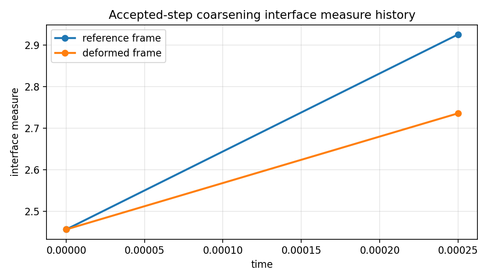
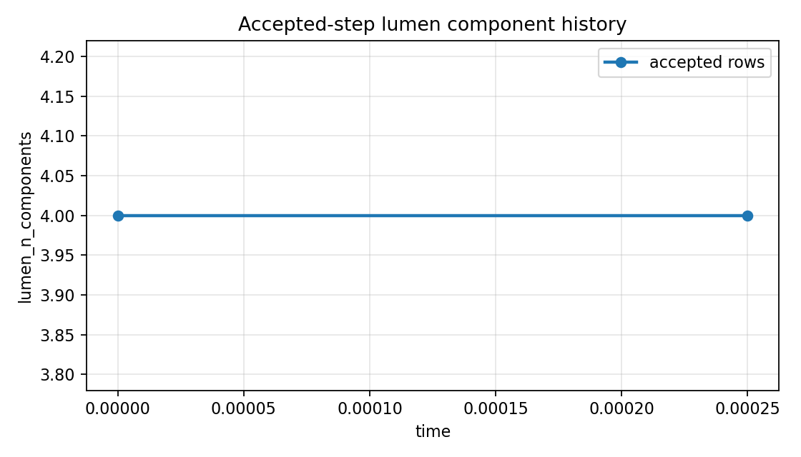
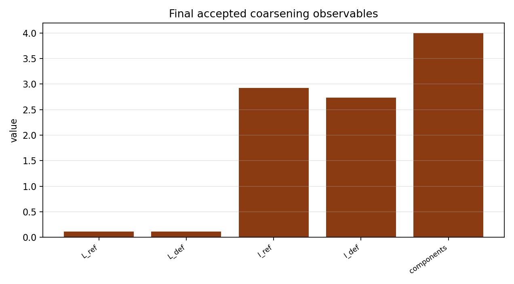
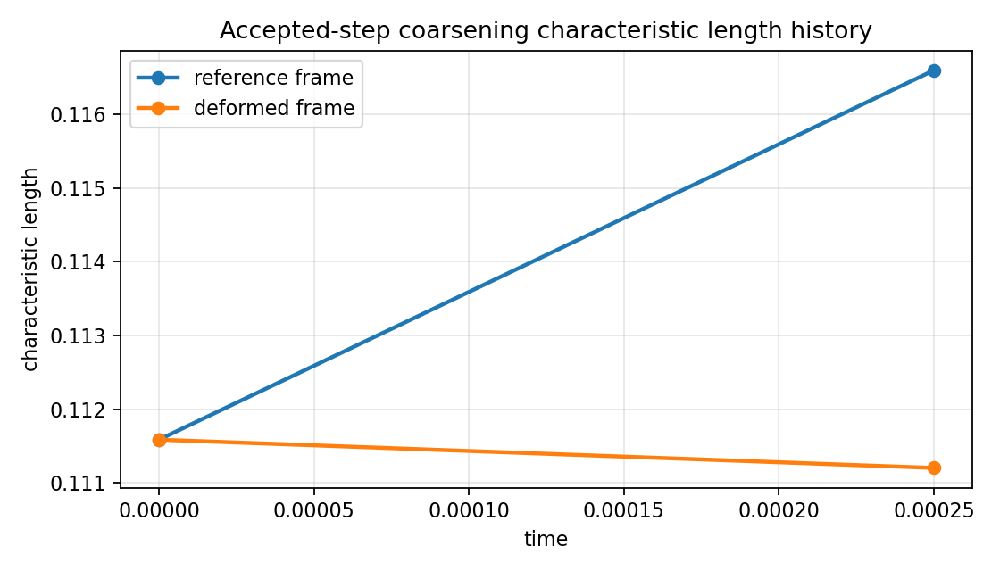

Benchmark
Coarsening Observables Contract
Family: coarsening-and-scaling
Task 7 coarsening observables emitted on accepted runtime rows and the packaged reporting surface.
Target and Success Criteria
target_kind: Exact contract
Tier: full
Unknowns active: accepted coarsening observables on runtime rows
Frozen terms: canonical sphere fixed-mesh validation lane
Comparison grammar: Achieved / Target
Tickets: VV-NEXT-401
What This Benchmark Verifies
This benchmark publishes the Task 7 coarsening observables contract on the canonical sphere lane so later research-tier scaling checks can rely on accepted runtime rows and packaged final-observable summaries.
Benchmark Narrative
Narrative
Physical Problem
The canonical sphere coarsening validation lane should emit primitive coarsening observables in both reference and deformed frames on every accepted row.
Narrative
Target Definition
The target is exact contract consistency between accepted metric rows and the component runtime stream for interface measure and characteristic length observables.
Narrative
Why These Observables
The characteristic-length, interface-measure, and topology-history plots expose the primitive observables that later harness-side scaling checks consume.
Narrative
How To Read The Error
This page verifies the observable contract only. It does not fit exponents and does not make a scaling-law claim.
Narrative
Reference Qualification
The benchmark is tied directly to the Task 7 canonical-sphere coarsening observable validation harness and its accepted runtime rows.
Narrative
Limitations
Fit windows and fitted exponents are intentionally kept out of the public runtime contract and remain V&V-harness concerns.
accepted_rows
pass
final_lumen_characteristic_length_ref
pass
final_lumen_interface_measure_ref
pass
Raw Run Evidence
Extracted Observables
plot

Accepted-step interface measure history in reference and deformed frames.
plots/coarsening-interface-history.png
plot

Accepted-step lumen component history for the canonical sphere contract lane.
plots/coarsening-topology-history.png
Error Summary
plot

Final accepted coarsening observables summarized from the runtime contract rows.
plots/coarsening-final-observables.png
Supplementary Figures and Media
Exact Contract Target
plot

Accepted-step characteristic length history in reference and deformed frames.
plots/coarsening-characteristic-length-history.png
Scalar Summary
| Label | Value | Unit | Comparison | Threshold | Severity |
|---|---|---|---|---|---|
| accepted_rows | 2 | rows emitted | > 0 | pass | |
| final_lumen_characteristic_length_ref | 0.116595 | final accepted value | >= 0 | pass | |
| final_lumen_interface_measure_ref | 2.92571 | final accepted value | >= 0 | pass |
Evidence Table
| Label | Metric | Comparison | Threshold | Severity |
|---|---|---|---|---|
| accepted_rows | accepted metric rows | 2 | > 0 | pass |
| runtime_alignment | accepted rows == runtime records | 2 | 2 | pass |
| final_components | final lumen_n_components | 4 | >= 1 | pass |
Series Overview
| Plot | Group | Observable | Case | Level | Target |
|---|---|---|---|---|---|
| characteristic_length_ref | exact_contract_target | reference-frame characteristic length | accepted_rows | runtime | accepted metric row |
| characteristic_length_def | exact_contract_target | deformed-frame characteristic length | accepted_rows | runtime | accepted metric row |
| characteristic_length_ref | exact_contract_target | reference-frame characteristic length | accepted_rows | runtime | accepted metric row |
| characteristic_length_def | exact_contract_target | deformed-frame characteristic length | accepted_rows | runtime | accepted metric row |
Cases
Case
accepted_rows
Accepted runtime rows emitted by the canonical sphere coarsening observables validation lane.